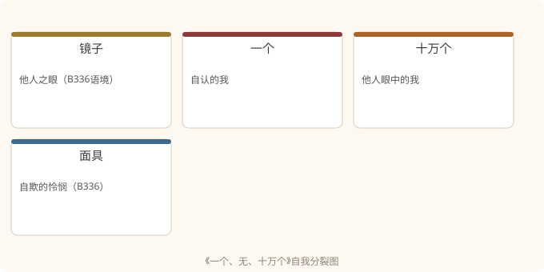

一个、无、十万个
一、基本信息
| 作者 | 路易吉·皮兰德娄 |
|---|---|
| 成书/出版 | 1925-26年（Britannica B336：Uno, nessuno e centomila (1925-26)） Luigi Pirandello — Encyclopaedia Britannica（百科全书） |
| 国别/地区 | 意大利 |
| 时代 | 近代 · 20世纪20年代 |
| 体裁 | 长篇小说 |
| 语言 | 意大利语 |

《一个、无、十万个》自我分裂图（主题·结构图）
二、创作背景
Britannica（B336）：'the most original and the most typical of his novels'——皮兰德娄最具原创性、最典型的小说。
Britannica（B336）：小说探究'他人如何看待他与他如何看待自己'之别（exploring how others see him differently than he sees himself）。
Britannica（B336）：皮兰德娄身份论——'a person is one, no one and a hundred thousand, according to his appearance to this person or that'。
三、内容脉络
主人公因妻子之镜发现自我在他人眼中分裂为'十万个'（剧情通说待核——B336未载细节）。
对'自我面具'的执念与自我抹除（通说待核）。
四、主要人物表
| 人物 | 身份 | 说明 |
|---|---|---|
| 主人公（维塔利亚诺说） | 银行职员 | （通说待核，B336未载人名） |
五、主题与艺术特点
- 他人之镜中的自我分裂（B336：how others see him differently）。
- '一、无、十万'的身份算术（B336 书名与作者论）。
- 自我欺骗的怜悯（B336：'My art is full of bitter compassion for all those who deceive themselves'）。
六、影响与评论
- Britannica：'the most original and the most typical of his novels'（B336）。
Luigi Pirandello — Encyclopaedia Britannica（百科全书） - Britannica：妻子之病'determined the theme of his most characteristic work'（B336）。
Luigi Pirandello — Encyclopaedia Britannica（百科全书）
七、阅读建议
难点
- 心理—哲学小说的抽象性。
- '面具'（maschera）术语体系。
- 中译名待核（《一个，无，十万个》等）。
- 意大利文原版。
皮兰德娄进阶；先读《六个寻找剧作家的角色》。
八、待核实
- 主人公名（维塔利亚诺说）与妻子名核对（B336未载）。
- 中译名两说待核。
- 1925-26年连载出版细节待核。
本页主要来源
相关作品：六个寻找剧作家的角色许珀里翁雷雨
路易吉·皮兰德娄的其他收录作品：六个寻找剧作家的角色一个、无、十万个